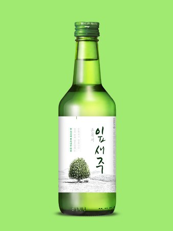

잎새주
광주·전남 대표 소주 · 19.8도→16도까지 단계적 저도화(2024)

- 분류
- 희석식
- 도수
- 16도
- 출시
- 2002
- 제조사
- 보해양조
- 지역
- 전라도
이름 유래
나뭇잎 끝에 맺히는 이슬의 감성적 이미지. 잎새(나뭇잎) + 이슬이 맺힌다는 자연 이미지의 합성 네이밍. 깨끗하고 맑은 소주를 표현.상세 연혁
보해양조(1950년 전남 목포 창업, 현 본사 광주광역시 및 목포, 주 공장 영암) 대표 소주. 100% 자연 감미료·인공조미료 미첨가 강조. 광주·전남 대표 소주. 2025년 7월에는 병 없이 파우치에 담은 5L·10L 대용량 '잎새주 파티팩'을 출시했다.변경 이력
2002
19.8도로 출시
2016
18.5도로 인하
2017
17.8도로 인하
2019
17.3도로 인하
2022
16.5도로 인하
2024
16도로 인하
스페셜 에디션
2024
'택시운전사×잎새주' — 5·18 민주화운동 기념 한정 라벨, 이후 매년 5월 새 디자인으로 출시
2025.12
크리스마스 에디션 — 잎새주 360mL·파티팩 5L 연말 한정 라벨, 은목서 심볼 트리와 병오년 붉은 말 일러스트
2026.04
'택시운전사×잎새주' 3번째 에디션 — 광주권 한정 유통, GS25 200mL 예약 판매